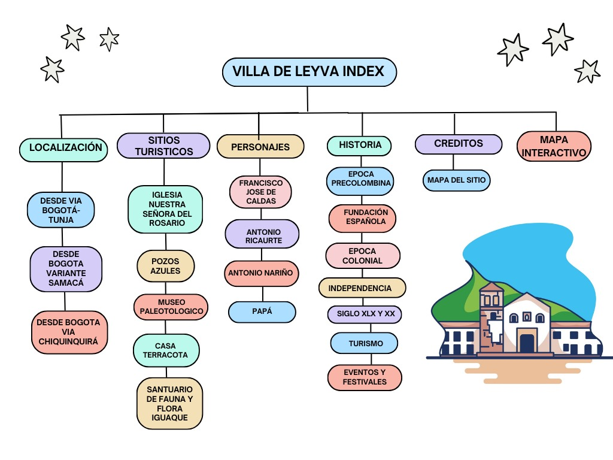

Créditos
- Capitán Antonio Ricaurte. (2010, 24 marzo). Fuerza Aeroespacial Colombiana.
- Chaparro, A. (s. f.). 1. Biografía · Antonio Nariño · Biblioteca Virtual Colombiana.
- Museo El Fósil – Sistema de Información Turística de Boyacá. (s. f.).
- Timetoast. (1786, 10 junio). Datos generales sobre Villa de Leyva Timeline. Timetoast timelines.
- Villa de Leyva cumple 450 años y así los celebra RTVC y sus medios. (2022, 9 junio). RTVC Sistema de Medios Públicos
- eVDL. (2019, 21 septiembre). Villa de Leyva - ¿Cómo llegar?
- colaboradores de Wikipedia. (2023). Villa de Leyva. Wikipedia, la enciclopedia libre.
- Villa de Leyva Extrema. (2020, 7 febrero). Villadeleyvaextrema.com.
- MUNICIPIO DE VILLA DE LEY-Museo Paleontologico – Sistema de Información Turística de Boyacá. (s. f.).
- Pozos azules. (s. f.). Pozos Azules.
- Baraya, S. (2019). Casa terracota: una sola pieza cerámica de 500 m2. ArchDaily Colombia.
- Parques Nacionales Naturales de Colombia. (2023, 8 agosto). Santuario de Flora y Fauna Iguaque - Parques Nacionales Naturales de Colombia.
- 138 razones para venir a Villa de Leyva y alrededores - Vitrina Boyacense
- Turismo por Boyacá - GoBoy
- Terminal de transortes de Villa de Leyva
- Foto | Fernando Bello Mendoza, Jefe de Comunicaciones y Prensa Alcaldía de Villa de Leyva
Mapa de sitio
